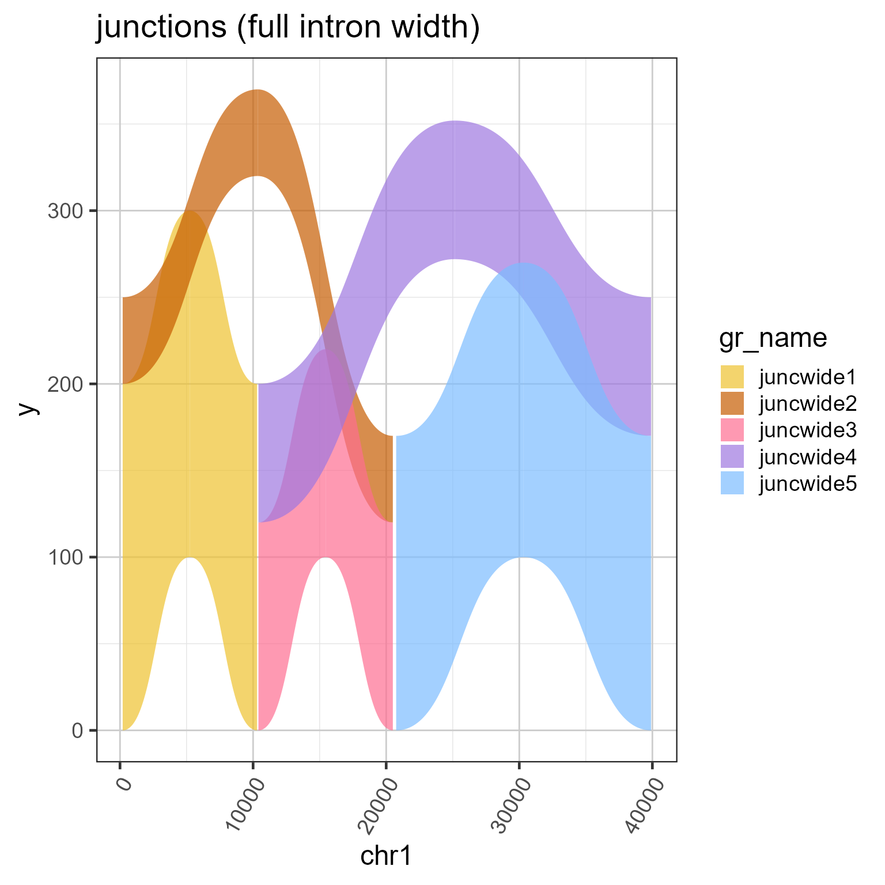
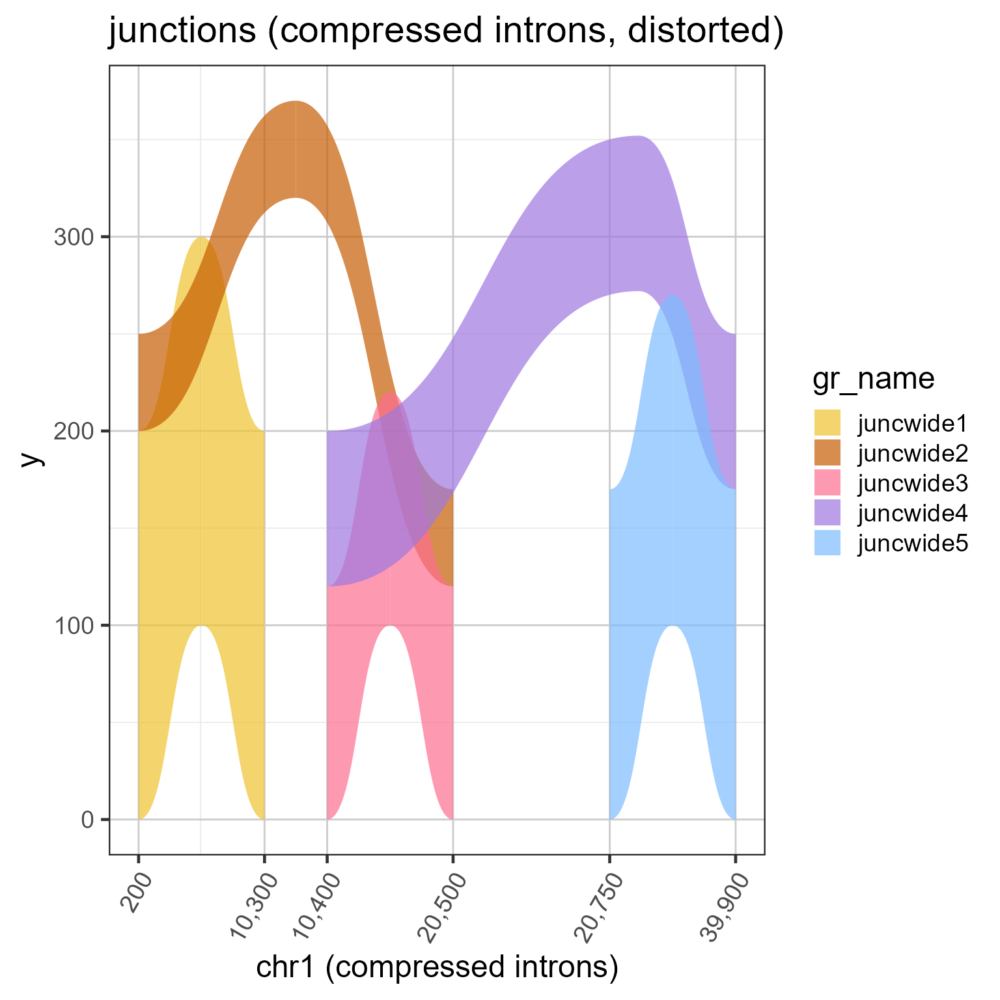
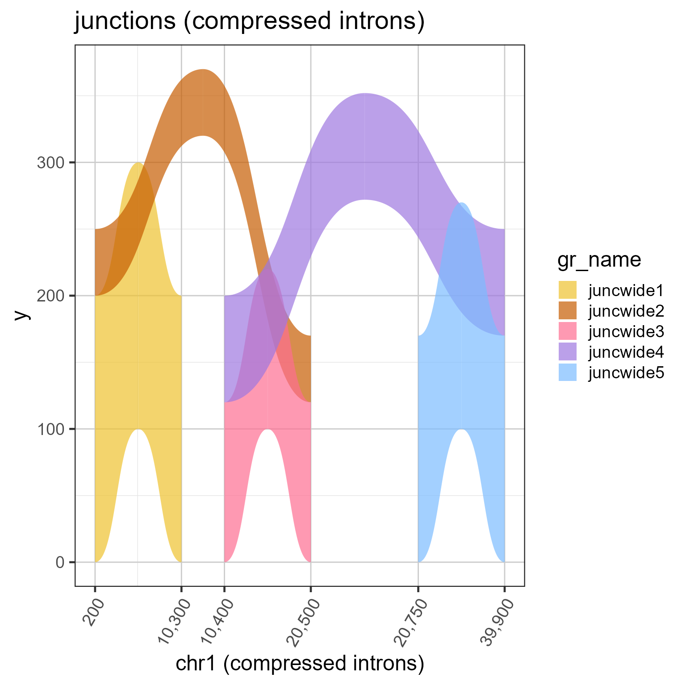

Sample junction data GRangesList with wide introns
Format
GRangesList where each GRangesList item represents a distinct biological sample. Each GRanges item represents one splice junction, whose score represents the abundance of splice junction reads observed. The start of each splice junction should be one base after the end of the corresponding exon, using 1-based coordinates. Therefore, an exon spanning 1-10 covers 10 bases, the corresponding junction would begin at position 11. Similarly, if the connected exon begins at position 100, the junction would end at position 99.
Details
This dataset contains RNA-seq splice junction data stored as a GRangesList.
Intron and exon sizes are more consistent with mammalian gene structure, and are intended to demonstrate the challenge with visualizing exon coverage data on a genomic scale. See examples for steps to compress the intron sizes.
See also
Other Splicejam data:
sjenvtest,
test_cov_gr,
test_cov_wide_gr,
test_exon_gr,
test_exon_wide_gr,
test_junc_gr
Examples
# The code below is used to create the junction test data
suppressPackageStartupMessages(library(GenomicRanges));
suppressPackageStartupMessages(library(ggplot2));
data(test_junc_gr);
test_junc_wide_gr <- test_junc_gr;
xshift <- c(0, 10000, 20000, 39000);
end(test_junc_wide_gr) <- end(test_junc_gr) + xshift[c(2,3,3,4,4)];
start(test_junc_wide_gr) <- start(test_junc_gr) + xshift[c(1,1,2,2,3)];
names(test_junc_wide_gr) <- jamba::makeNames(
rep("juncwide", length(test_junc_gr)),
suffix="");
test_junc_wide_gr;
#> GRanges object with 5 ranges and 2 metadata columns:
#> seqnames ranges strand | score sample_id
#> <Rle> <IRanges> <Rle> | <numeric> <character>
#> juncwide1 chr1 200-10299 + | 200 sample_A
#> juncwide2 chr1 200-20499 + | 50 sample_A
#> juncwide3 chr1 10400-20499 + | 120 sample_A
#> juncwide4 chr1 10400-39899 + | 80 sample_A
#> juncwide5 chr1 20750-39899 + | 170 sample_A
#> -------
#> seqinfo: 1 sequence from an unspecified genome; no seqlengths
# To plot junctions, use grl2df(..., shape="junction")
junc_wide_df <-grl2df(test_junc_wide_gr, shape="junction")
ggWide1 <- ggplot2::ggplot(junc_wide_df,
ggplot2::aes(x=x, y=y, group=id, fill=gr_name)) +
ggforce::geom_diagonal_wide(alpha=0.7) +
colorjam::theme_jam() +
colorjam::scale_fill_jam() +
ggplot2::xlab("chr1") +
ggplot2::ggtitle("junctions (full intron width)")
print(ggWide1);

# The exons are required to define compressed ranges
# Note: DO NOT USE THESE STEPS
# this plot shows the distortion of arcs by compressed x-axis
# and we will fix it in the next example
data(test_exon_wide_gr);
ref2c <- make_ref2compressed(test_exon_wide_gr,
nBreaks=10);
ggWide1c <- ggWide1 +
ggplot2::scale_x_continuous(trans=ref2c$trans_grc) +
ggplot2::xlab("chr1 (compressed introns)") +
ggplot2::ggtitle("junctions (compressed introns, distorted)");
print(ggWide1c);

# to fix the arc shapes, supply the transform to grl2df()
# Note: USE THESE STEPS
junc_wide_c_df <- grl2df(test_junc_wide_gr,
shape="junction",
ref2c=ref2c);
ggWide1c2 <- ggplot2::ggplot(junc_wide_c_df,
ggplot2::aes(x=x, y=y, group=id, fill=gr_name)) +
ggforce::geom_diagonal_wide(alpha=0.7) +
colorjam::theme_jam() +
colorjam::scale_fill_jam() +
ggplot2::scale_x_continuous(trans=ref2c$trans_grc) +
ggplot2::xlab("chr1 (compressed introns)") +
ggplot2::ggtitle("junctions (compressed introns)");
print(ggWide1c2);
